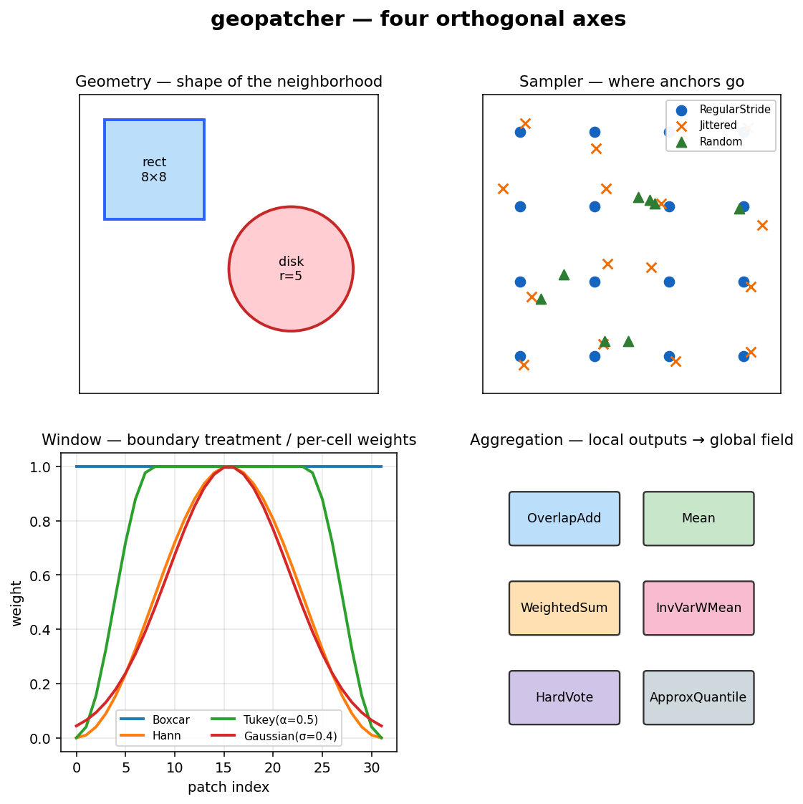
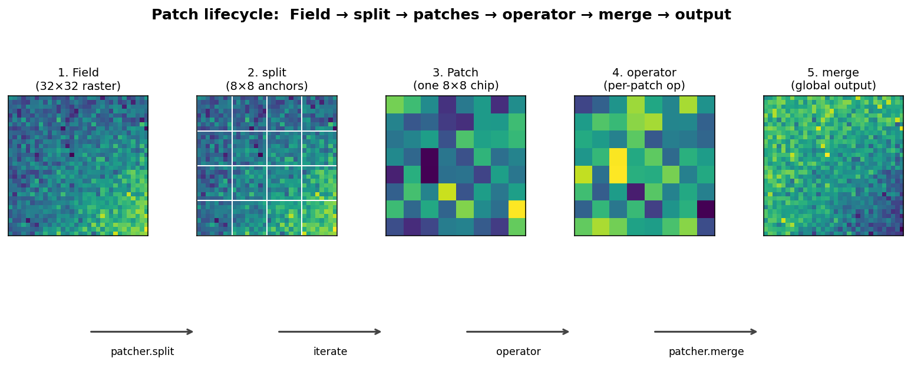
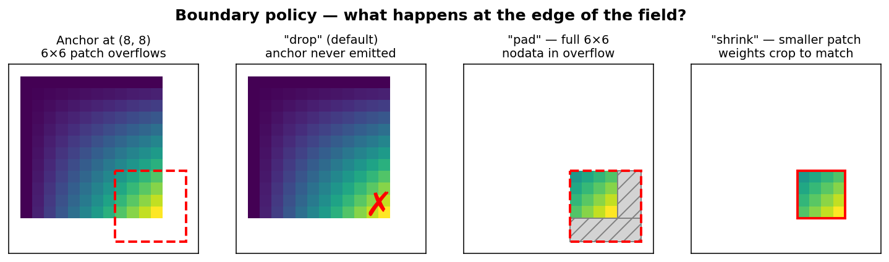

Concepts¶
geopatcher answers a single question — what slice of the data does my
operator see at once, and how do local outputs become a global field? —
by composing four orthogonal axes over a Field Protocol.
This page walks through each axis, the patch lifecycle, determinism contracts, boundary policies, streaming vs eager modes, and the async / hooks / on-error machinery that surrounds them.
The four-axis abstraction¶

flowchart LR
subgraph Spatial[" SpatialPatcher "]
direction LR
G[Geometry] --> S[Sampler] --> W[Window] --> A[Aggregation]
end
style G fill:#bbdefb,stroke:#1565c0
style S fill:#c8e6c9,stroke:#2e7d32
style W fill:#ffe0b2,stroke:#ef6c00
style A fill:#f8bbd0,stroke:#c2185bEach axis is a strategy object — a small dataclass with a single method — that the patcher composes at construction time. Anything you can swap without touching the other three is on its own axis.
Axis 1 — Geometry¶
Shape and scale of the neighborhood around an anchor (and the domain topology it lives on).
flowchart LR
A[anchor] --> R[SpatialRectangular<br/>size=h×w]
A --> D[SpatialSphericalCap<br/>radius θ on the sphere]
A --> K[SpatialKNNGraph<br/>k nearest neighbours]
A --> RG[SpatialRadiusGraph<br/>radius r in metric space]
A --> P[SpatialPolygonIntersection<br/>arbitrary geometry]
style A fill:#fff59d,stroke:#f9a825The geometry produces a window of indices into the field — a raster
Window, a list of neighbour ids, a polygon, … — that the field uses to
select the patch payload.
Axis 2 — Sampler¶
Where anchors are placed. Overlap is emergent — it falls out of the sampler stride relative to the geometry size.
flowchart LR
Field[domain] --> RS[SpatialRegularStride<br/>deterministic grid]
Field --> JS[SpatialJitteredStride<br/>grid + bounded noise]
Field --> RND[SpatialRandom<br/>i.i.d. uniform]
Field --> PD[SpatialPoissonDisk<br/>min-spacing constraint]
Field --> EX[SpatialExplicit<br/>caller-supplied anchors]
style Field fill:#bbdefb,stroke:#1565c0Axis 3 — Window¶
Per-cell weights applied on the way in (signal taper) and on the way out (denominator for normalised reconstruction).
flowchart LR
Geom[geometry.size] --> BC[SpatialBoxcar<br/>flat 1.0]
Geom --> HN[SpatialHann<br/>cosine taper to 0]
Geom --> TK[SpatialTukey<br/>flat-top + cosine flank]
Geom --> GS[SpatialGaussian<br/>radial Gaussian]
Geom --> CU[SpatialCustom<br/>any callable]
style Geom fill:#bbdefb,stroke:#1565c0Axis 4 — Aggregation¶
Local outputs → global field. Streaming-safe members fold one patch at a time; non-streaming members need the whole list.
flowchart LR
P[patches] --> OA[SpatialOverlapAdd<br/>weighted sum / Σw]
P --> MN[SpatialMean / WeightedSum / InvVarWMean]
P --> HV[SpatialHardVote / SoftVote]
P --> MD[SpatialMedian / Mode<br/>non-streaming]
P --> AX[SpatialApproxQuantile<br/>streaming sketch]
style P fill:#c8e6c9,stroke:#2e7d32Patch lifecycle¶
A single end-to-end run touches each axis in turn:

patcher = SpatialPatcher(geometry=..., sampler=..., window=..., aggregation=...)
for patch in patcher.split(field): # Iterator[Patch] — streaming default
out = operator(patch.data)
yield patch.with_data(out)
stitched = patcher.merge(out_patches, field.domain)
A Patch carries:
data— the payload selected from the field (usually an ndarray /GeoTensor).anchor— the sampler-emitted coordinate ((row, col)for raster, …).indices— the geometry-emitted index window (rasterio.windows.Window, neighbour ids, …).weights— the window-emitted per-cell weights.
split is an iterator by design — materialise with list(...) when you
want the eager case.
Determinism contracts¶
Stochastic samplers — SpatialRandom, SpatialJitteredStride,
SpatialPoissonDisk, TemporalRandom — accept a seed: int | None.
seed |
Behavior |
|---|---|
int |
Anchor → patch is deterministic. Two samplers with the same config return bit-identical anchors across calls and across instances. Required for reproducible ML eval, CI, and journal-resume. |
None (default) |
Re-seeds from OS entropy on each call. Anchors will differ across calls. Pick this only for casual exploration. |
The Hypothesis round-trip suite (tests/test_roundtrip.py) leans on the
int contract — given a seed, it shrinks failing examples to the minimal
(shape, stride, seed) triple and replays them deterministically.
Boundary policies¶
What happens when an anchor sits close enough to the edge that the
neighborhood would overflow the domain? SpatialRectangular exposes
this as a first-class parameter:

| Mode | Behavior |
|---|---|
"drop" (default) |
Sampler clips so overflowing anchors are never emitted. |
"pad" |
Edge anchors are emitted; the raster Field reads with boundless=True so the patch is the full geometry size, padded in the overflow region with the reader's nodata. RasterField / AsyncRasterField only. |
"shrink" |
Edge anchors are emitted; the geometry clips the returned Window so the patch is smaller at the edge and weights crop to match. |
"raise" |
Edge anchors are emitted; SpatialPatcher.split raises a ValueError on the first overflow. Useful with SpatialExplicit for strict edge handling. |
"reflect" and a fully aggregation-aware "pad" (zero-weight mask in
the overflow region for COLA-correct stitching) are planned follow-ups.
Streaming vs eager¶
split is an iterator. The default mode is streaming — each patch is
yielded, consumed, and (with max_in_flight) released before the next
one is materialised.
# Streaming — bounded memory regardless of field size.
patcher = SpatialPatcher(..., aggregation=SpatialOverlapAdd())
stitched = patcher.merge(patcher.split(field), field.domain)
# Bounded-memory accumulator on disk (zarr) instead of RAM.
# Route the merge call through `agg` (not the patcher's default agg)
# so the streaming code path is the one that actually runs.
agg = SpatialOverlapAdd(streaming=True, target_path="out/", chunks=(256, 256))
stitched_zarr = agg.merge(patcher.split(field), field.domain)
Every SpatialAggregation carries a streaming_safe: ClassVar[bool]
flag. The fully-streaming family (Sum, Mean, Variance,
OverlapAdd, WeightedSum, InvVarWeightedMean, HardVote,
SoftVote) folds one patch at a time; the non-streaming members
(Median, Mode, Learned) need the full patch list. Streaming the
non-streaming ones emits a RuntimeWarning pointing at the streamable
substitute (Median → ApproxQuantile, Mode → HardVote).
Eager is opt-in: list(patcher.split(field)).
Async, hooks, on-error policies¶
Async path¶
AsyncSpatialPatcher mirrors SpatialPatcher over AsyncField
(currently AsyncRasterField over georeader.AsyncGeoTIFFReader). The
async path is concurrent at the I/O boundary, not the compute boundary —
patches are read concurrently but operators run synchronously on each.
Hooks¶
A PatcherHook Protocol exposes on_split_start, on_patch_start,
on_patch_done, on_split_end, on_merge_start, on_merge_end,
on_error. Hooks may implement only the callbacks they need. Pass a
list to split / merge. Exceptions raised by hooks themselves are
converted to RuntimeWarnings so observability code cannot abort
patching. See the observability page for tqdm /
OpenTelemetry examples.
on_error policies¶
Each patch-read is independently isolated through one of four policies:
| Policy | Behavior |
|---|---|
"raise" (default) |
Fail fast — preserves historical behavior. |
"skip" |
Log to patcher.errors, omit the failed anchor from the stream. |
"mask" |
Emit a NaN-valued patch the same shape as the geometry. |
"retry" |
Retry matching exceptions up to max_retries before logging and skipping. retry_on defaults to (OSError, TimeoutError) so programmer errors are never silently retried. |
See recipes/on-error-policies.md for
the full pattern, and recipes/journal-and-resume.md
for the PatchJournal restart story.
Index space vs coordinate space (temporal stencils)¶
By default the temporal samplers and geometries work in integer index
space: TemporalRegularStride(step=3) skips three array elements,
TemporalLookbackHorizon(lookback=12) counts twelve array elements
backwards. This is fast and unambiguous when the source cadence is fixed
and known.
For workloads where the cadence is a property of the store (ARCO-ERA5
Zarrs, multi-resolution archives) you also want coordinate space —
"9 hours of context, regardless of whether that's 9 array steps or 3 or
something else." TimeStencil plus TemporalStencilGeometry /
TemporalStencilSampler express the window in physical units against a
1-D coordinate vector you pass via TemporalPatcher.split(..., coord=)
(or SpatioTemporalPatcher.split(..., coord=), which threads it into
the temporal half of both couplings).
The patcher requires coord= when either component opts in via
needs_coord = True; the integer path is unchanged when it doesn't.
The recipe in recipes/temporal-stencils.md
walks through both layers; ADR-004 in
decisions.md records the design.
Random access via IndexedPatchView¶
SpatialPatcher.split returns an iterator (ADR-001 — laziness is
the default). For ML loaders that need integer-indexed random access —
torch Dataset.__getitem__, Grain RandomAccessDataSource, xrpatcher's
patcher[i] — wrap the (patcher, field) pair in an
IndexedPatchView. It's a stdlib Sequence[Patch] with optional
in-memory cache=True / preload=True flags mirroring xrpatcher's API.
The iterator-first split stays canonical; IndexedPatchView is a
wrapper, not a replacement. No torch/grain/jax dependency in
geopatcher core — frameworks wrap the Sequence themselves in one line.
The recipe in recipes/xarray-nd-patching.md
walks through the migration story; ADR-005 in
decisions.md records the design.
Where the framework draws the line¶
- Mesh /
uxarray(UXarrayField) is deferred to v0.2. - Hierarchical Patcher-of-Patchers is a recipe on top of the
framework rather than a dedicated class. See
recipes/streaming-overlap-add.md. - Two-pass / global-context operators are explicitly out of scope as
framework primitives; users compose the two passes themselves with
the codified
patcher.reduceandpatcher.two_passhelpers.
Cross-stack links¶
- Catalogs:
geocatalog— which scenes / time range / AOI to read. - Operators:
geotoolz— how to chain per-patch and global ops. - End-to-end:
geocatalog/docs/notebooks/end_to_end_lake_tahoe.ipynb— the canonical cross-repo Sentinel-2 / Lake Tahoe notebook.